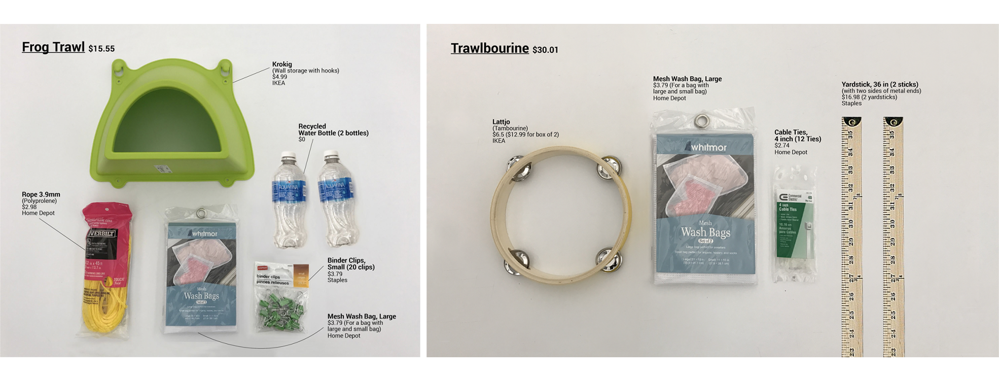
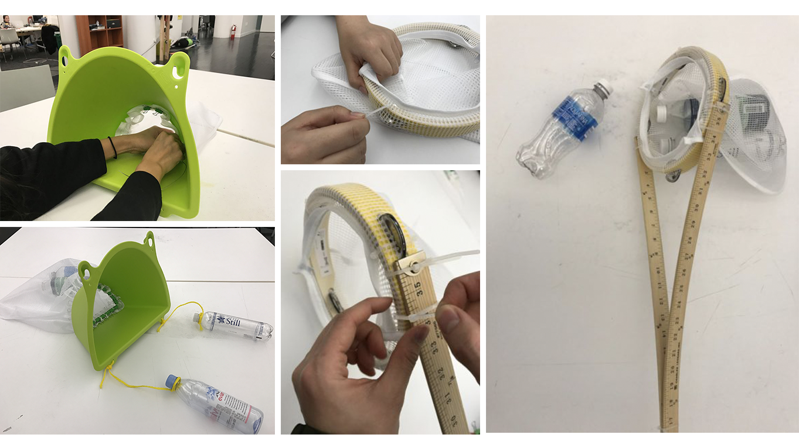
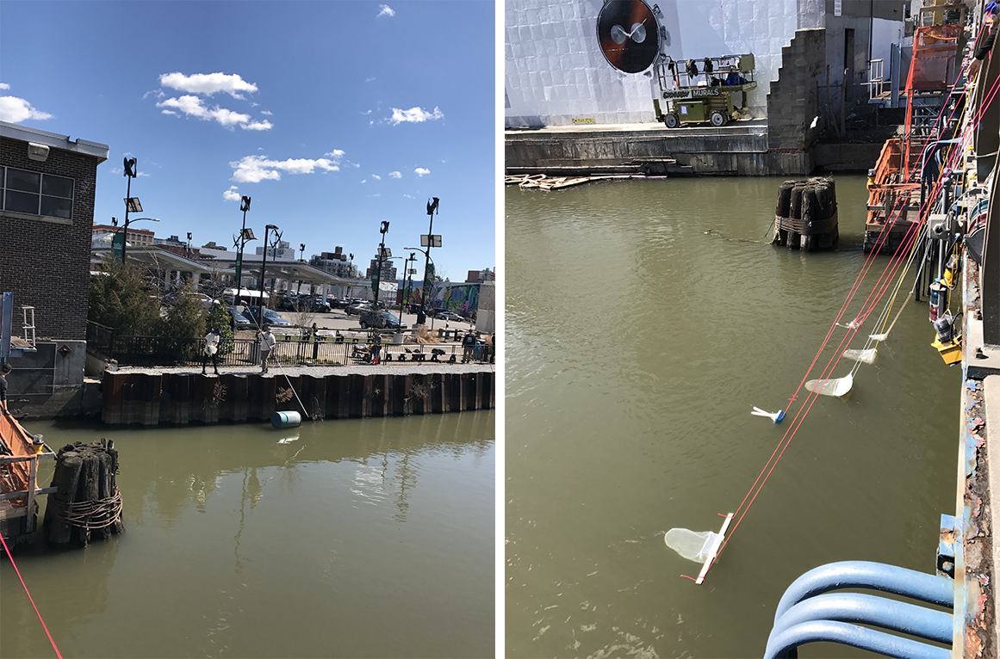
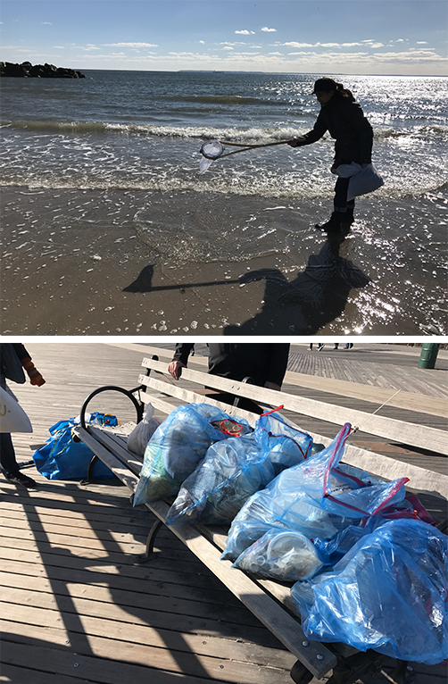
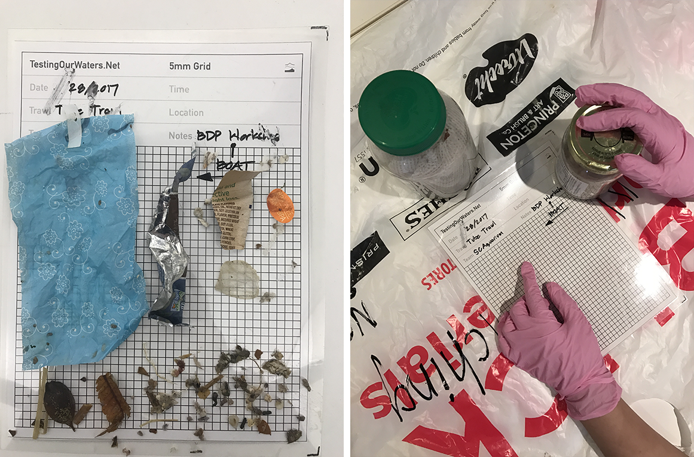

Trawl
"Ocean cleaning tool to Test our water"

http://www.instructables.com/id/Trawlbourine/
http://www.instructables.com/id/Frog-Trawl/
https://www.engineeringforchange.org/how-to-make-a-trawl-to-track-local-marine-plastic-pollution/
http://www.instructables.com/id/Frog-Trawl/
https://www.engineeringforchange.org/how-to-make-a-trawl-to-track-local-marine-plastic-pollution/
Design & Assemble
A trawl is a wide-mouth fishing net that is designed to skim and drag on the surface of the water to collect plastics.
The team is assigned to design/redesign a trawl base on inexpensive components from IKEA in order to allow ease access of materials to instruct world-wide.
The team is assigned to design/redesign a trawl base on inexpensive components from IKEA in order to allow ease access of materials to instruct world-wide.

Field Research

Testing the new design trawls and reiterating for continuous improvement of the trawls' capabilities in different environments.
At the same time, the team gathers, collects and recycles the residue along, outside or inside water bodies to maintain green environment and protect marine life.
At the same time, the team gathers, collects and recycles the residue along, outside or inside water bodies to maintain green environment and protect marine life.

Protocol Processing
Every plastic collected from the net of trawl is being processed through a protocol and scrutinized to conduct a qualitative research for a result. the results target to increase the awareness of the public on our marine pollution.

My Thoughts
Team members